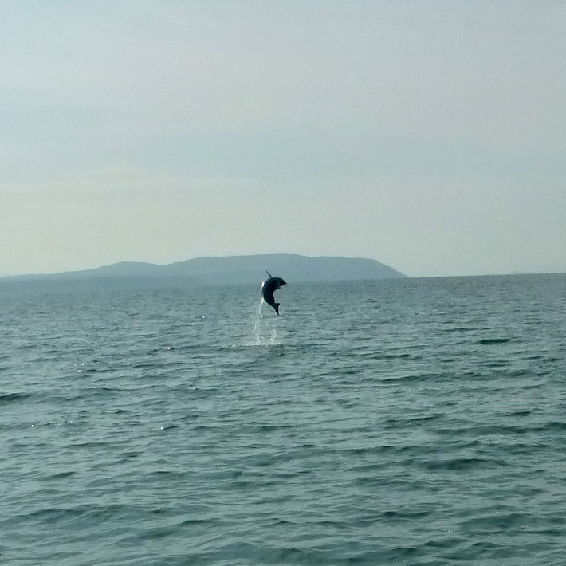
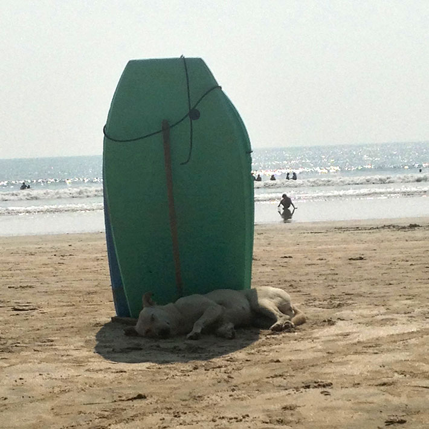
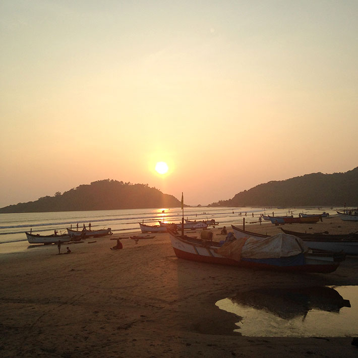

Umeå School of Architecture
5th semester/autumn 2013
Break during the field work
Palolem beach, Goa, India
During our field trip to India we had five days off so me and my friends took the opportunity to go on a small vacation to Goa and Palolem beach.


